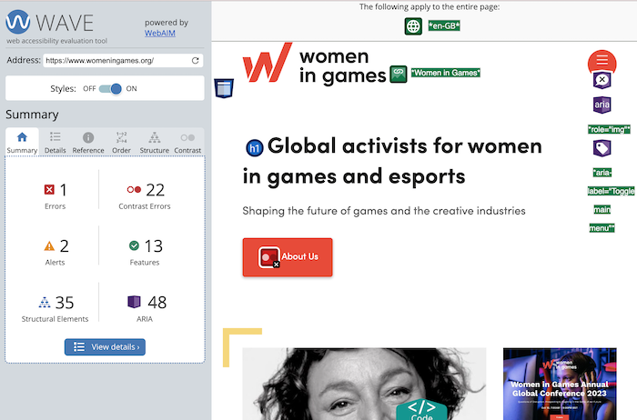
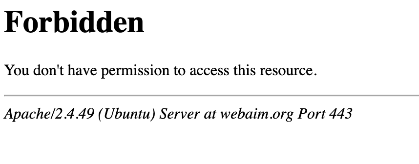
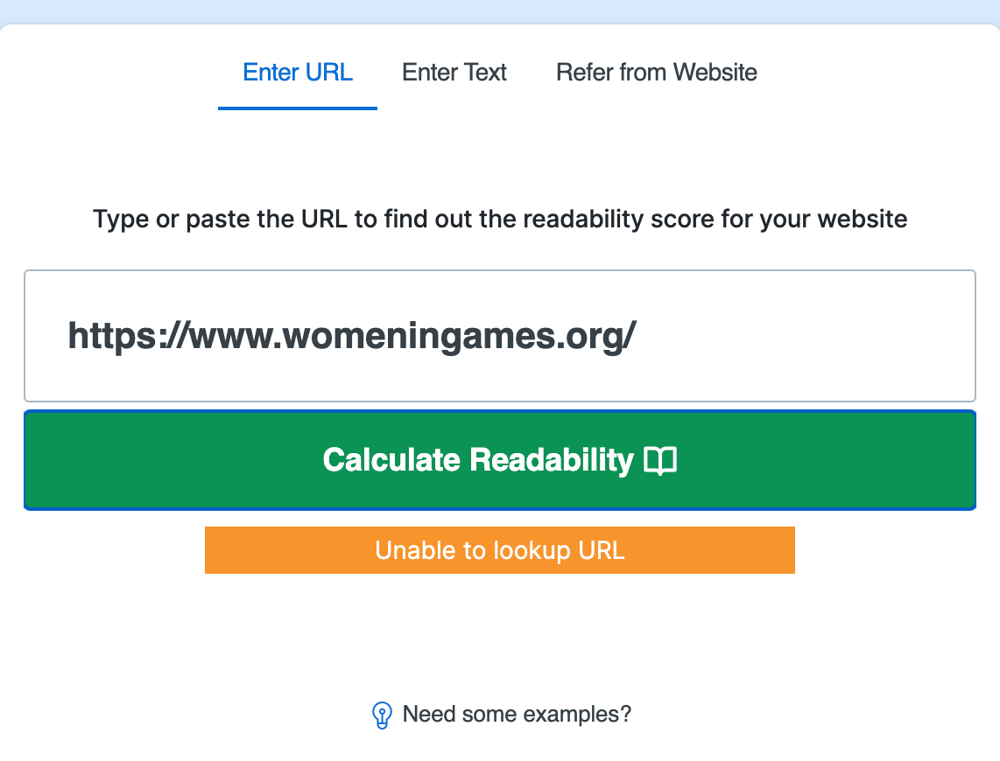
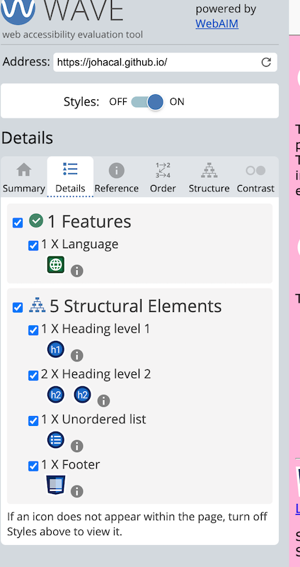

IL Activity 10
Task 1:
https://www.womeningames.org/

AVE Web Accessibility Evaluation Tools
The main issue here appeared to be contrast. At first glance, red and white should be contarsting enough, however, the text appeared too small to be visible for low vision users.
It had some alerts of redundant text and titles, however, from reading the text prompt, I fel that it was appropriate to insert the title or parts of the title in the text in this particular context.
There also seemed to be an issue with the first alert that said that there was an error, that i could not click on, so I never discovered what it was referring to.
Features showed up as 'Null or empty' because most images were missing titles or credits. This was mostly fine in the context, however, govong credits to the photographer or adding titles who the picture was of would have been nice.
There are exceptions, if for example the model wanted to stay anonymous, it would be justifieble. All pictures appear to be property to the website, so giving credits is probably not very impactful but could be great for the artist whose work it is.
Web AIM - web accessibility in mind

Unfortunately, the followinf tool did not work.

Web FX also did not work.
Lab Task:

My website would not be necessarily considered accessible to anyone with visual impairment by itself. Due to being text heavy, users may want to use a read-aloud tool to be able to access the information presented. Just like any infromative or descriptive reserach or study, it is manily text-based where numbers and statements make uo most of the content with some supplementary images.
However, images and colours used have been picked to accommodate those with colour blindness due to how common it can be.
Nonetherless, no major errors in contrast or missing titles or captions were found.
Lab task:
For my MAD(B) project, I could record my own voiceover to mitigate any errors or inconsitencies that an automated read-aloud extension could come under
I could also provide a tool where you can enlarge all text by a certain percentage or zoom in. Despite you being able to do in most web browsers, if I added a javasript button for this, I could make sure that the website still looks the same and there are no technical or design errors witn enlargement.
Lastly, I would create a completely different colour scheme where I would implement supplementary colours that would match a better contrast in the eyes of someone with colour blidness or visual impairment. I would have to become more educated on what colours are visible and which colours tend to blend in with one another.